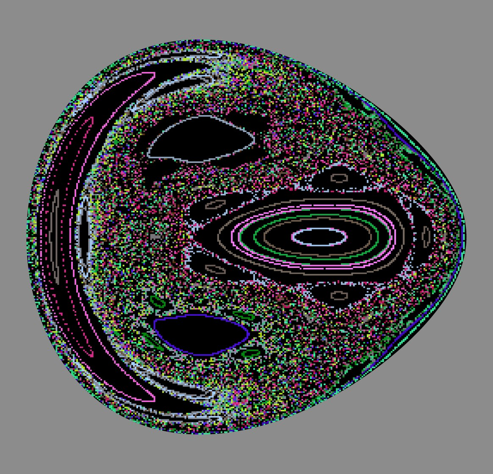
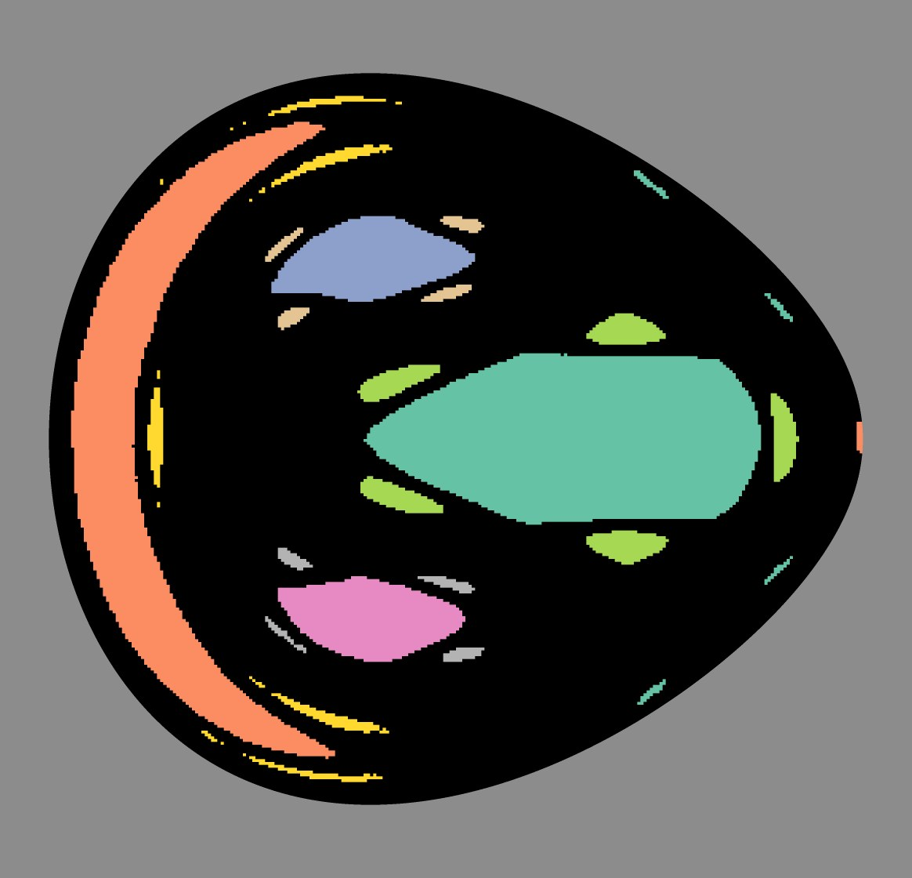
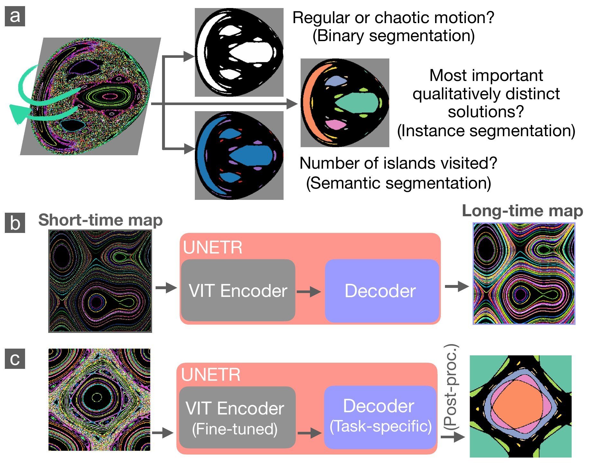
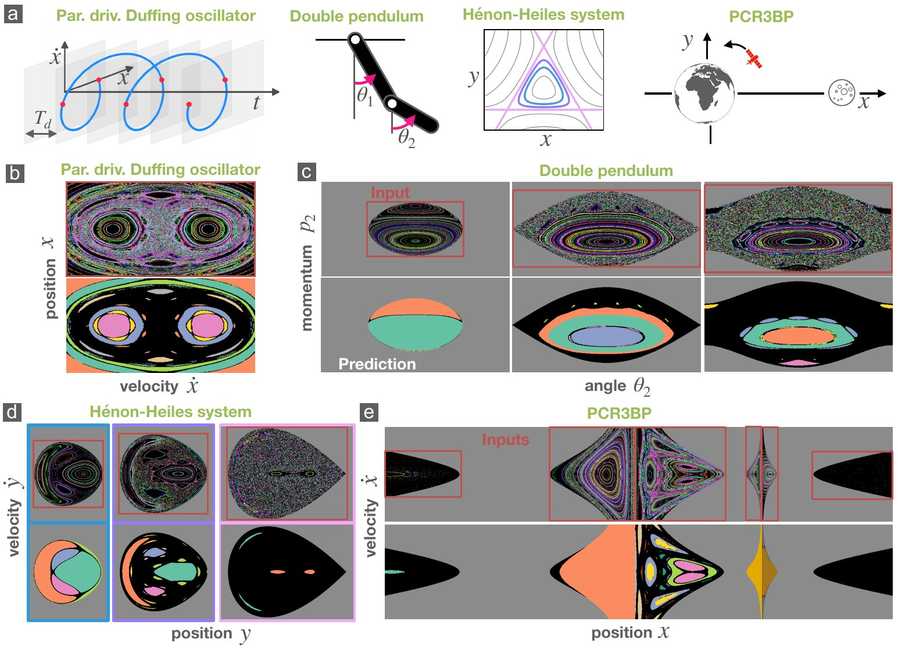

Poincaré Vision Transformer
A foundation model that reads Poincaré maps: regular and chaotic regions, island chains, and their periods.


Much of the progress in physics rests on a scientist's ability to extract understanding from a diagnostic plot, yet scientific visualizations remain largely outside the reach of modern vision models. We introduce the Poincaré Vision Transformer, a foundation model trained to extract physical insight from Poincaré maps. These are among the most information-dense images in physics: a single picture captures the dynamics of a Hamiltonian system across an extended region of phase space.
We recast the expert visual analysis of such maps as a set of image-to-image tasks, and introduce a physics-inspired pretraining for them: from a map built by following a set of initial conditions for a short time, the network predicts the map that the same initial conditions produce after a much longer evolution. This pretraining yields better performance on the downstream tasks than either random initialization or the state-of-the-art masked-autoencoder pretraining used for vision models. Although trained entirely on randomly generated discrete symplectic maps, the model transfers to Poincaré sections of real Hamiltonian systems, from periodically driven one-dimensional systems to two-degree-of-freedom flows such as the Hénon–Heiles system.
Three questions a physicist asks of a map
Separate the regions filled by invariant curves from the chaotic sea.
Group the islands visited in turn by one orbit into a single object: the islands of one chain, or a band of circulating tori.
Label each region by its first-return period: for a chain of islands, the number of islands.

(a) The three tasks on a Hénon–Heiles section. (b) Pretraining by long-time map completion: from a map painted with short orbits, the UNETR predicts the map the same initial conditions paint after a much longer evolution. The target needs no labels, only further iteration of the map. (c) The pretrained ViT encoder is fine-tuned with a task-specific decoder.
Map-completion pretraining beats random initialization and MAE on every task
Validation scores of the ViT-L UNETR on held-out random maps, for three choices of encoder initialization. The rare high-period classes benefit most, which is why the mIoU gain (every class weighted equally) is about three times the per-map gain.
Predictions on validation maps
Predictions on held-out validation maps for each of the three segmentation tasks and for the map-completion pretraining task. Open one to browse the maps, filter them by family and topology, and sort them from best to worst.
Trained on random maps, applied to real physical systems
The instance network was deployed without any change of weights on four continuous-time systems from different corners of physics: a parametrically driven Duffing oscillator, the double pendulum, the Hénon–Heiles system, and the planar circular restricted three-body problem. Except for the driven oscillator, a conserved quantity confines the orbits to an accessible region whose shape the network never saw in training; in the three-body problem it is not even connected.
Without a pixel-level ground truth, each predicted instance is checked by launching test orbits inside it. Nearly all remaining errors are small or thin islands that the network misses, and no chain is split between instances.

(a) The four systems. (b) Driven Duffing oscillator. (c) Double pendulum across the libration-to-rotation threshold. (d) Hénon–Heiles across the regular-to-chaotic transition. (e) Restricted three-body problem, six windows segmented independently. Red rectangles: crops rescaled onto the 256 × 256 input; grey: inaccessible region.
Data, models and code
Edmond deposit
Weights of every network in the paper (pretrained encoders and all fine-tuned arms), the validation trajectory banks with ground truth, the full prediction galleries and per-map scores, and the out-of-distribution orbit data and code. DOI 10.17617/3.NBUIL8.
Paper
Preprint on arXiv, with appendices on map families, ground-truth labelling, architecture, training recipes and the evaluation protocol.
Code
poincare-vit on GitHub: a small Python package that segments your own map from its orbits, downloading the networks from Edmond. The Edmond deposit also holds the code behind every figure of the paper and the evaluation code.
Playground
Seed orbits of the standard map in the browser and watch the segmentation follow. Open the mock-up.
BibTeX
@article{Peano2026PVT,
author = {Peano, Vittorio},
title = {{Poincar\'e Vision Transformer}, a foundational model to analyze {Poincar\'e} maps},
journal = {arXiv preprint arXiv:XXXX.XXXXX},
year = {2026}
}
@misc{PVTData2026,
author = {Peano, Vittorio},
title = {{Poincar\'e Vision Transformer}: trained models, validation data and prediction galleries},
howpublished = {Edmond -- The Open Research Data Repository of the Max Planck Society},
year = {2026},
doi = {10.17617/3.NBUIL8}
}